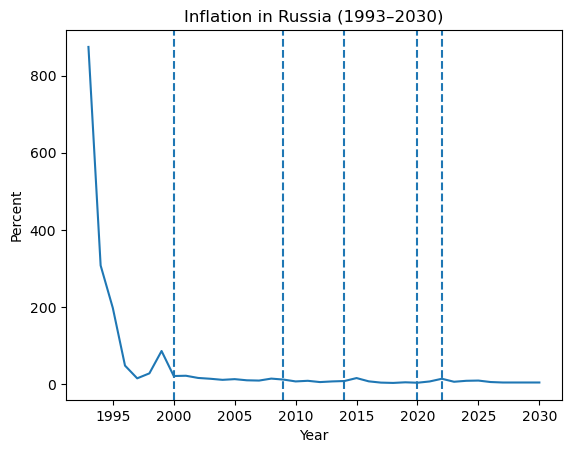
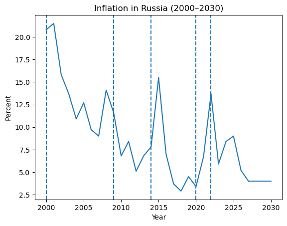
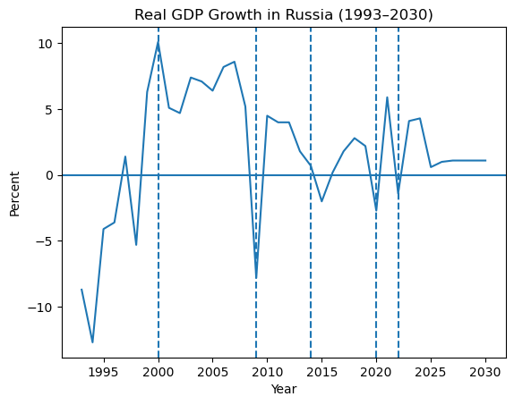
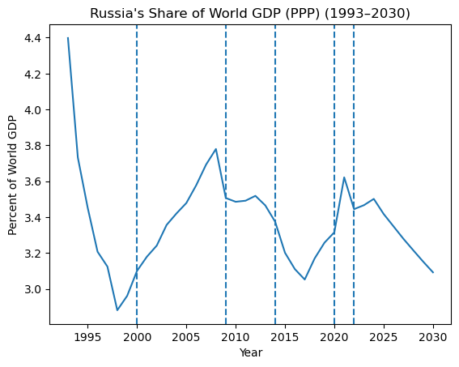
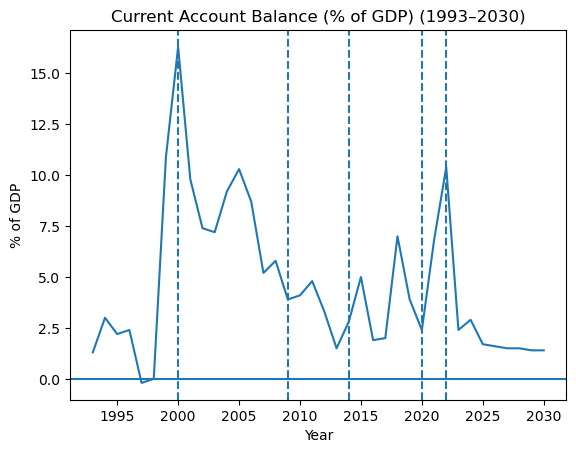

Macro analysis · 1993–2030
Russia's Macroeconomic Evolution Since 1993
From post-Soviet instability to stabilization, and whether that stabilization ever converted into sustained economic weight.
The question
How did Russia move from post-Soviet macroeconomic instability to relative stability, and how did its position in the global economy change across the major shocks from 1993 to the present?
Macroeconomic stability underwrites policy credibility, investment confidence, and a country's resilience to external shocks. Russia is a useful case precisely because it contains all three phases in one series: transition, recovery, and repeated exposure to global shocks.
Data
IMF World Economic Outlook, annual data for Russia from 1993 through 2030, with everything past 2026 flagged as projection rather than observation. Four variables:
- Inflation (CPI, %) — monetary stability.
- Real GDP growth (%) — expansion or contraction.
- Share of world GDP (PPP, %) — weight in the global economy.
- Current account (% of GDP) — external balance and export strength.
These are national annual aggregates. They carry no quarterly volatility, no household-level outcomes, no inequality measures, and no political variables, and they follow IMF definitions that get revised over time.
Preparation
The IMF export arrives split across sheets by indicator, so the first step was consolidating it into a single time series frame: identifying year columns, reshaping to long format, stripping footnote markers, special dashes, and other non-numeric artifacts before casting to numeric, then merging indicators on year with outer joins to preserve every available observation. Rows with no indicator data were dropped. No imputation was needed — the four selected variables had complete annual coverage over the window.
The series was constrained to 1993 onward to isolate the post-Soviet period, and kept at annual frequency deliberately: the question is about structural change, not cyclical movement.
Inflation, 1993–2030


The collapse from transition-era levels is the dominant feature. The 2000s carry repeated inflation spikes tied to individual crises, but none approaches the systemic instability of the 1990s. Russia moved from monetary disorder to something that functions as stabilization.
Real GDP growth

Recovery through the 1990s, peaking around 2000, then clear contractions in 2008, 2020, and 2022 — each one a global or geopolitical shock landing on the domestic economy. The projection period shows modest growth rather than any return to the expansionary rates of the 2000s. Stabilization happened; sustained momentum didn't.
Share of world GDP (PPP)

A sharp drop through the transition, steady recovery through the 2000s, then stabilization and decline after the 2014 sanctions. The 2021 peak reads as post-COVID recovery rather than the start of an upward trend. The overall shape is recovery followed by stagnation.
Current account balance

Strong surpluses through the 2000s on export revenue, gradual decline after 2014, and a large spike in 2022 followed by normalization in the projections. Notably, this series does not track growth — external performance stayed strong through periods when domestic growth did not.
What the series say together
The story starts in systemic instability: hyperinflation, repeated GDP contraction, a falling share of world output. That phase is institutional failure and economic transformation at the same time.
Around 2000 there's a structural break visible in all four series at once. Inflation drops to low double and then single digits, growth turns positive and stays there, and global share begins climbing. The 2008 financial crisis interrupts it — growth goes negative, inflation rises — but the economy does not return to 1990s-style instability.
After 2014 and the sanctions that followed the annexation of Crimea, the data shifts to a slower path: more volatile growth, temporary inflation spikes, a declining share of world GDP. The 2020 pandemic adds another contraction. In 2022 GDP contracts again and inflation rises while the current account surges.
Domestically, Russia moved from instability to stabilization after 2000. That is clear. Internationally, the stabilization did not convert into sustained economic weight. Controlled inflation was not sufficient for long-run economic power, and large current account surpluses did not imply sustained growth — the two decoupled.
Limitations
Annual national aggregates hide within-year volatility, regional variation, and household welfare entirely. A stable macro environment says nothing on its own about living standards or distribution.
IMF figures past 2026 are projections and will be revised. The analysis is descriptive, not causal. Geopolitical events enter only indirectly, through their macroeconomic traces, and only the largest ones are marked — plenty of smaller events affect the intervening years without appearing here.
The finding I'd flag as most interesting: the scale of the inflation stabilization after the 1990s. That drop in volatility reads as a credibility shift in the policy framework. Yet the share of world GDP never returned to pre-transition proportions, which points to a global repositioning that the domestic stabilization didn't undo. A natural extension is comparing Russia against other post-Soviet or emerging markets over the same window.
Data and tooling
IMF World Economic Outlook. Python and pandas for consolidation and cleaning. AI tools were used to help restructure the multi-sheet IMF export into a single frame and to debug the cleaning code. Variable selection, interpretation, and conclusions are my own.
← All projects